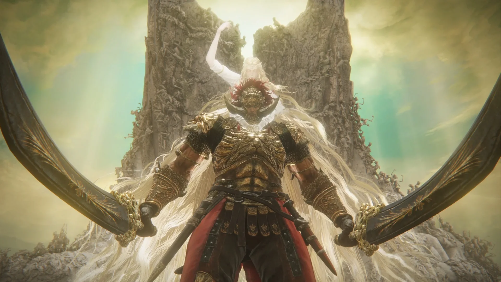

Kas yra kompiuteriniai zaidimai?
žaidimai, kurie yra žaidžiami kompiuteriu ar kitu specialiai tam pritaikytu įrenginiu (namų žaidimų konsole, delnine žaidimų konsole).
Būtent ši pramoga yra naudojama didžiosios dalies jaunimo aplink visą pasaulį. Kompiuteriniai žaidimai išgavo populiarumą gan greitai.
Didžioji dalis kompiuterinių žaidimų kainuoja pinigus, tačiau populiariausi FPS (First person shooter) žaidimai pinigų išvis nereikalauja.

Kompiuteriniai žaidimai taip pat turi labai daug žanrų, kaip